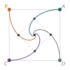

Four greyhounds \(A\), \(B\), \(C\) and \(D\) are held at positions such that \(ABCD\) is a large square. At a given instant, the dogs are released and \(A\) runs directly towards \(B\) at constant speed \(v\), \(B\) runs directly towards \(C\) at constant speed \(v\), and so on. Show that \(A\)’s path is given in polar coordinates (referred to an origin at the centre of the field and a suitable initial line) by \(r = \lambda\mathrm{e}^{-\theta}\), where \(\lambda\) is a constant.
Generalise this result to the case of \(n\) dogs held at the vertices of a regular \(n\)-gon (\(n \geq 3\)).
The hook
Four dogs stand at the corners of a square field. Each chases the dog to its left. Where do they meet, how long does it take, and what paths do they follow? The paths are beautiful spirals that wind round the centre infinitely many times, and yet each dog runs only a finite distance, exactly the length of a side of the square.
This is a pursuit problem, a type first studied by Pierre Bouguer in 1732 for a ship chasing a pirate. The trick that makes it solvable is symmetry: whatever happens to one dog happens to all of them, so the four dogs always form a square. Once you see that, the differential equation almost writes itself.
Before you start
By symmetry, what shape do the four dogs form at every moment? Where is its centre?
The situation is unchanged by a quarter-turn about the centre of the square (which moves \(A \to B \to C \to D \to A\)), so the dogs always form a square with the same centre \(O\). The square rotates and shrinks, but it stays a square. In particular, \(A\) and \(B\) are always the same distance \(r\) from \(O\), and \(OB\) is always a quarter-turn ahead of \(OA\).
Working it through
Stage 1 The direction of motion
\(A\) runs towards \(B\). In the triangle \(OAB\), what angle does \(AB\) make with \(AO\) (the direction towards the centre)?
Triangle \(OAB\) has \(OA = OB\) and a right angle at \(O\), so its other two angles are \(45^\circ\). So \(A\)’s velocity, of size \(v\), points at \(45^\circ\) to the inward radial direction, and is turned towards \(B\), in the direction of increasing \(\theta\) (if we label the angles so that \(B\) is anticlockwise from \(A\)).
Stage 2 The differential equation
Split \(A\)’s velocity into radial and transverse parts. In polar coordinates the radial velocity is \(\dot r\) and the transverse velocity is \(r\dot\theta\).
The radial component (inwards) is \(v\cos45^\circ\) and the transverse component is \(v\sin45^\circ\), so \[\dot r = -\frac{v}{\sqrt2}, \qquad r\dot\theta = \frac{v}{\sqrt2}.\] Dividing, \(\dfrac{\mathrm{d}r}{\mathrm{d}\theta} = \dfrac{\dot r}{\dot\theta} = -r\), so \(r = \lambda e^{-\theta}\), with \(\lambda\) the initial distance from the centre if \(\theta = 0\) initially.■
Stage 3 \(n\) dogs
For a regular \(n\)-gon, what is the angle at \(O\) in triangle \(OAB\)? What angle does \(AB\) make with \(AO\)? Repeat Stage 2.
The angle at \(O\) is \(\frac{2\pi}{n}\), so the two equal base angles are \(\frac12\bigl(\pi - \frac{2\pi}{n}\bigr) = \frac\pi2 - \frac\pi n\). The velocity makes this angle with the inward radius, so \[\dot r = -v\cos\left(\frac\pi2 - \frac\pi n\right) = -v\sin\frac\pi n, \qquad r\dot\theta = v\sin\left(\frac\pi2 - \frac\pi n\right) = v\cos\frac\pi n.\] Hence \(\dfrac{\mathrm{d}r}{\mathrm{d}\theta} = -r\tan\dfrac\pi n\), and \[r = \lambda e^{-\theta\tan(\pi/n)}. \qed\] For \(n = 4\), \(\tan\frac\pi4 = 1\), recovering the square case.

Looking back
Symmetry reduces many bodies to one. Four interacting dogs became a single particle obeying a simple rule, because the configuration stays a square.
Polar coordinates for motion about a centre. Radial and transverse components of velocity, \(\dot r\) and \(r\dot\theta\), gave the equation directly.
Divide to eliminate time. The ratio \(\dot r/\dot\theta\) gave the shape of the path without needing to know when each point is reached.
What’s really going on
The radial speed \(\dot r = -v\sin\frac\pi n\) is constant, so the dogs reach the centre after time \(T = \frac{r_0}{v\sin(\pi/n)}\), having each run a distance \(vT = \frac{r_0}{\sin(\pi/n)}\). For a regular \(n\)-gon of side \(s\), \(r_0 = \frac{s}{2\sin(\pi/n)}\), so each dog runs \[\frac{s}{2\sin^2(\pi/n)}.\] For four dogs this is exactly \(s\): each dog runs precisely the length of one side. (Here is a slick way to see it: \(B\)’s velocity is always perpendicular to \(AB\), so it does not change the distance \(AB\); only \(A\)’s motion, at speed \(v\) straight along \(AB\), closes the gap, and the gap is initially \(s\).) For three dogs the distance is \(\frac23s\), and for six it is \(2s\). Yet in every case the spiral winds round the centre infinitely many times, because \(\theta \to \infty\) as \(r \to 0\). A curve of finite length with infinitely many turns is no paradox: the turns get smaller fast enough.
The logarithmic spiral
The curve \(r = \lambda e^{-k\theta}\) is the logarithmic or equiangular spiral: it crosses every ray from the centre at the same angle. It appears in nature, in the shell of the nautilus and the arms of some galaxies, because growth that preserves shape produces it. It fascinated Jacob Bernoulli so much that he asked for it to be carved on his tombstone with the motto Eadem mutata resurgo (“Changed, I shall arise the same”), referring to the fact that it looks the same at every scale. The stonemason carved an Archimedean spiral instead.
Pursuit in practice
“Pure pursuit”, always heading straight at the target, is the simplest guidance law for a missile or a predator. It is not the best: heading for where the target will be (“proportional navigation”) is more efficient, and is what both modern missiles and some predators, such as dragonflies and falcons, actually do. The mathematics of pursuit and evasion became a subject of its own in the twentieth century under the name differential games.
The thinking skill
If a system is symmetric and the rules respect the symmetry, the symmetry is preserved for all time, and you can follow just one part.
This idea solves many problems in mechanics and dynamics; it is a simple case of the deep connection between symmetry and conservation.
Try this next
The slick argument. Explain carefully why the distance \(AB\) decreases at rate exactly \(v\) in the four-dog problem, and deduce that the dogs meet after time \(s/v\).
Three dogs. Three dogs start at the corners of an equilateral triangle of side \(s\). Find the equation of each path, the time until they meet, and the distance each runs.
How many turns? For four dogs starting \(100\) m from the centre, how close to the centre are they after one full turn? After how many full turns are they within \(1\) mm?
Two dogs. What happens with \(n = 2\) (two dogs facing each other)? Does the formula still make sense?
Further reading
Paul Nahin, Chases and Escapes: The Mathematics of Pursuit and Evasion (Princeton University Press). Everything about pursuit curves, from Bouguer to missiles.
Eli Maor, e: The Story of a Number (Princeton University Press). Includes the logarithmic spiral and Bernoulli’s tombstone.
D’Arcy Thompson, On Growth and Form (Cambridge University Press). The classic book on mathematics in nature, including spiral growth.